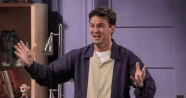

Chandler Bing Was Inspired By Matthew Perry
When they were choosing the cast for FRIENDS, Chandler and Phoebe weren’t supposed to be in the top four leads. It was only Rachel, Ross, Monica and Joey. However, once they started shooting the creators of the show realized that Chandler and Phoebe cannot be just kept as supporting characters.